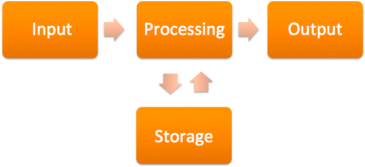

Unit1 Succeeding in PC Hardware <<
Previous Uint2 Hardware Basics
PCH1 Introduction
This lesson will cover the basics of PC Hardware. First, you will learn the various parts of both desktop and laptop computers. Next, you will discover basic terms that are associated with computers, such as hardware, software, and firmware. You will learn the most basic functions of a computer: input, output, storage, and processing. Next, you will explore various input and output interfaces on the computer and the associated cables. Finally, you will review connections between common peripherals and discuss the standard ports.
本課將介紹PC硬件的基礎知識。首先，將學習台式計算機和便攜式計算機的各個部分。接下來，將發現與計算機關聯的基本術語，例如硬件，軟件和固件。將學習計算機的最基本功能：輸入，輸出，儲存和處理。接下來，將探索計算機上的各種輸入和輸出接口以及相關的電纜。最後，將回顧通用外設之間的連接並討論標準端口。
PCH1 Functions of Computers: Input,Output,Storage,and Processing
What makes a computer a computer? Does a computer have to have certain pieces to be considered a computer? Consider the computers of the 1980s: they all included a display screen, a keyboard, and a processing unit. Over time, the computers have evolved into devices that do not look like a “typical” computer. Consider the iPhone or Android tablet, where the method of input relies on touch, without the use of a separate keyboard. How about the calculator watch displayed below; is it a computer?
是什麼使計算機成為計算機？一台計算機是否必須具有某些部件才能視為計算機？考慮一下1980年代的計算機：它們都包括顯示屏，鍵盤和處理單元。隨著時間的流逝，計算機已經演變為看起來不像“典型”計算機的設備。考慮iPhone或Android平板電腦，其中輸入方法依靠觸摸，而不使用單獨的鍵盤。下面顯示的計算器手錶怎麼樣？是電腦嗎？

So, as we consider the history of computers and the future of computers, we must consider what is and what is not a computer. Obviously, our desktops and laptops are computers, since they perform the input, processing, output, and storage functions. But so also are our cellular phones and smartphones, since they perform all these functions. What about our televisions? Many of these are complex computers as well, since they take information from our input using the remote control, process the information, and return an output, such as an on-demand movie. Many of these televisions also store the information, such as your favorite channels or even the video content itself for later playback. Even some thermostats are computers, since they also perform these functions, such as the “smart thermostats,” like the NEST and other popular brands. Remember, the main determination of whether something is a computer or not relies on the functions it performs: does it perform input, processing, output, and storage? If so, then it is a computer.
因此，當我們考慮計算機的歷史和計算機的未來時，我們必須考慮什麼是計算機，什麼不是計算機。顯然，我們的台式機和筆記本電腦是計算機，因為它們執行輸入，處理，輸出和存儲功能。但是，由於我們的手機和智能手機執行所有這些功能，所以它們也是如此。那我們的電視呢？其中許多都是複雜的計算機，因為它們使用遙控器從我們的輸入中獲取信息，處理信息並返回輸出，例如點播電影。這些電視中的許多電視也會存儲信息，例如您喜歡的頻道，甚至是視頻內容本身，以供以後播放。甚至有些自動調溫器都是計算機，因為它們也執行這些功能，例如“智能自動調溫器，像NEST和其他熱門品牌一樣。記住，對某物是否是計算機的主要確定取決於它執行的功能：它執行輸入，處理，輸出和存儲嗎？如果是這樣，則它是一台計算機。
Hardwre
A computer system includes hardware, software, and firmware. To build a computer, we must first gather the required hardware. The hardware is the part of the computer that you can touch and feel. When most people see a typical computer, they understand that there are physical components to what they are using, such as the the hard metallic or plastic System unit, central processing unit (CPU), power supply, disk drives, and other essential components. Hardware is limited by its manufacture date and specifically by the motherboard installed. Depending on age and availability, some of the hardware items may be expensive to acquire, repair, or replace. For example, if the computer is running slower over time as you add newer software, it may be necessary to increase the amount of physical memory, called RAM (random access memory), in the computer. In order to do this, the technician would need to purchase the correct size, speed, and style of memory according to the motherboard specifications and install it in the computer which will then enhance its ability to process information more quickly.
計算機系統包括硬件，軟件和固件。要構建計算機，我們必須首先收集所需的硬件。硬件是您可以觸摸和感覺到的計算機的一部分。當大多數人看到一台典型的計算機時，他們就會知道所使用的是物理組件，例如，硬金屬或塑料系統單元，中央處理器（CPU），電源，磁盤驅動器和其他必要組件。硬件受製造日期限制，特別是受安裝的主板限制。根據使用年限和可用性，某些硬件項目的購置，維修或更換可能會很昂貴。例如，如果計算機隨著時間的推移運行速度變慢，而您添加了更新的軟件，則可能有必要增加物理內存量，稱為計算機中的RAM（隨機存取存儲器）。為此，技術人員需要根據主板規格購買正確的大小，速度和內存類型，然後將其安裝在計算機中，這將增強其更快地處理信息的能力。
Computer hardware consists of the mechanical and electrical parts of the computer. Data flows through the motherboard in what is known as the system bus. External ports, which are discussed in more detail further in this lesson, allow peripheral devices to be connected to the system unit. Common ports are USB, serial, and parallel ports.
計算機硬件由計算機的機械和電氣部分組成。數據以所謂的系統總線流經母板。在本課程中將進一步詳細討論的外部端口允許將外圍設備連接到系統單元。通用端口是USB，串行和並行端口。
Peripheral devices consist of hardware attached to the system unit and are designated as input, output, or both. Traditional input device examples are the mouse and keyboard which are used to input data.
外圍設備由連接到系統單元的硬件組成，並被指定為輸入，輸出或兩者。傳統的輸入設備示例是用於輸入數據的鼠標和鍵盤。
Output devices consist of common items such as monitors, speakers, and printers. All of these devices are ways that the computer can give feedback to the user through either visual or auditory output.
輸出設備由通用項目組成，例如監視器，揚聲器和打印機。所有這些設備都是計算機可以通過視覺或聽覺輸出向用戶提供反饋的方式。
Traditionally singular devices have evolved to become both input and output. Gaming Joysticks which provide feedback to the user through vibrations and of course the touch-screen display now serve as both.
傳統上，單個設備已演變為輸入和輸出。通過振動向用戶提供反饋的遊戲操縱桿，當然觸摸屏顯示器現在兼用作兩者。
Software
Software is completely intangible and cannot be physically touched. Software, in its purest form, is a series of 1s and 0s (bits) that make up the code that gives the computer its instructions on how to perform a certain task. While you may be able to touch the media on which the software is stored (like a CD or DVD), you cannot really touch the software code itself.
軟件是完全無形的，不能被實際觸摸。最純粹形式的軟件是由一系列1和0（位）組成的代碼，這些代碼向計算機提供有關如何執行特定任務的指令。儘管您可以觸摸存儲軟件的介質（例如CD或DVD），但實際上不能觸摸軟件代碼本身。
The most basic software that a computer requires is the operating system. There are numerous operating systems on the market today, including various versions of Microsoft Windows, Macintosh OS X, Linux, Android, and iOS, to name just a few. The operating system provides the standard methods for saving, retrieving, changing, printing, and transmitting information in the computer. Operating systems contain internal commands, which are programs that are built into the operating system to perform basic tasks such as file management (delete, copy, and rename files). Additionally, operating systems also contain external commands, which are added programs to complete more complicated functions, such as defragmentation of a hard drive or handling the remote control of another computer on the network.
計算機所需的最基本的軟件是操作系統。當今市場上有許多操作系統，其中包括Microsoft Windows，Macintosh OS X，Linux，Android和iOS的各種版本。操作系統提供了用於在計算機中保存，檢索，更改，打印和傳輸信息的標準方法。操作系統包含內部命令，這些內部命令是操作系統中內置的用於執行基本任務（例如文件管理（刪除，複製和重命名文件））的程序。此外，操作系統還包含外部命令，這些命令是添加的程序，可以完成更複雜的功能，例如對硬盤驅動器進行碎片整理或處理網絡上另一台計算機的遠程控制。
最後，有稱為應用程序的軟件程序。這些程序用於創建，存儲，修改和查看您創建的信息。諸如Microsof
Finally, there are software programs called applications. These programs are used to create, store, modify, and view information that you create. Applications, such as Microsoft Office or Adobe Acrobat, allow you to read and create documents and presentations. Other applications, such as games and web browsers, may instead be used for entertainment.
最後，有稱為應用程序的軟件程序。這些程序用於創建，存儲，修改和查看您創建的信息。諸如Microsoft Office或Adobe Acrobat之類的應用程序允許您閱讀和創建文檔和演示文稿。可以將其他應用程序（例如游戲和Web瀏覽器）用於娛樂。
Firmware
Firmware is a combination of hardware and software, often called “software on a chip.” Firmware allows control of the device to which the chip is connected. A firmware chip contains specialized software and is often attached to motherboards, optical drives (such as CD, DVD, or Blu-ray), mass storage devices, and other specialized hardware.
固件是硬件和軟件的組合，通常稱為“芯片上的軟件”。固件允許控制芯片所連接的設備。固件芯片包含專用軟件，通常連接到主板，光盤驅動器（例如CD，DVD或藍光），大容量存儲設備和其他專用硬件。
In older generations of firmware, the firmware was not upgradable unless you replaced the physical chip, but in recent years firmware has been designed to be “flashable.” This means that the chip can be upgraded if the software is outdated or has a programming error. This firmware “flash” replaces the older software on the chip with the latest version, improving performance or enhancing security.
在較早版本的固件中，除非更換了物理芯片，否則固件無法升級，但是近年來，固件被設計為“可刷新的”。這意味著，如果軟件過時或出現編程錯誤，則可以升級芯片。該固件“閃存”用最新版本替換了芯片上的舊軟件，從而提高了性能或增強了安全性。
The most common type of firmware found in a computer is called the BIOS (basic input/output system), which provides the computer with the most basic of tasks before the operating system is even loaded. Without the BIOS, the computer would be rather useless, as it wouldn’t even be able to read the hard drive and load the operating system. Firmware is persistent: it remains on the chip even after the power is removed, unlike temporary storage (such as RAM).
計算機中最常見的固件類型稱為BIOS（基本輸入/輸出系統），BIOS甚至在加載操作系統之前就為計算機提供了最基本的任務。沒有BIOS，計算機將變得毫無用處，因為它甚至無法讀取硬盤驅動器並加載操作系統。固件具有持久性：與臨時存儲（例如RAM）不同，固件即使在斷電後仍保留在芯片上。
Componentization/Standardization
Componentization is the process of breaking down large and complex items into simple, reusable, and interchangeable pieces. For many years, computer software and hardware were made by individual companies building things that only worked for a single system. For example, if IBM made a network card, it would not work in a Compaq or Dell computer. Over the years, hardware developers realized that if they could agree to a set of standards, they could create components that could be built to work together using standard interfaces, which saves time, money, and complexity. This same concept is now being used in the software world under object-oriented programming — a standardized method of programming.
組件化是將大型和復雜項目分解為簡單，可重用和可互換的部分的過程。多年來，計算機軟件和硬件是由獨立的公司製造的，這些公司只能在單個系統上工作。例如，如果IBM製作了網卡，則它不能在Compaq或Dell計算機中工作。多年以來，硬件開發人員意識到，如果他們同意一套標準，他們可以創建可以構建為使用標準接口一起工作的組件，從而節省了時間，金錢和復雜性。現在，在面向對象的程序設計（一種標準化的程序設計方法）下的軟件世界中使用了相同的概念。
Standardization allows for a set of rules that everyone can follow so that hardware is interoperable and software is interoperable. This increases the ability to have componentization of hardware and software, since the input and output created are standardized. For example, web pages are coded in HTML (HyperText Markup Language), which all web browsers understand. Therefore, the user can use any web browser and still get the content they are interested in viewing because of the standardization of the system.
標準化允許每個人都可以遵循一組規則，以便硬件可互操作，軟件可互操作。由於創建的輸入和輸出是標準化的，因此這提高了對硬件和軟件進行組件化的能力。例如，網頁以HTML（超文本標記語言）編碼，所有網絡瀏覽器都可以理解。因此，由於系統的標準化，用戶可以使用任何Web瀏覽器，並且仍然可以獲得他們感興趣的內容。
Unit1 Succeeding in PC Hardware <<
Previous